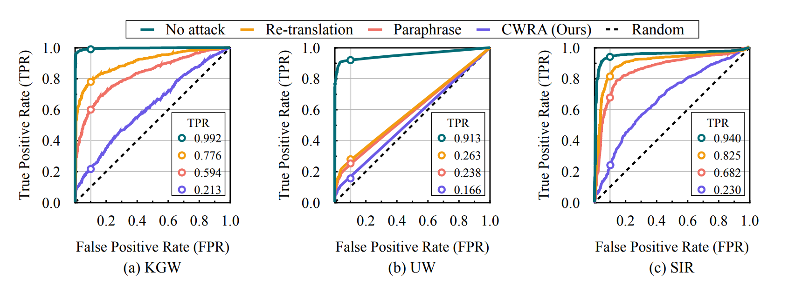
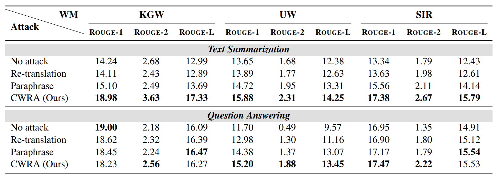
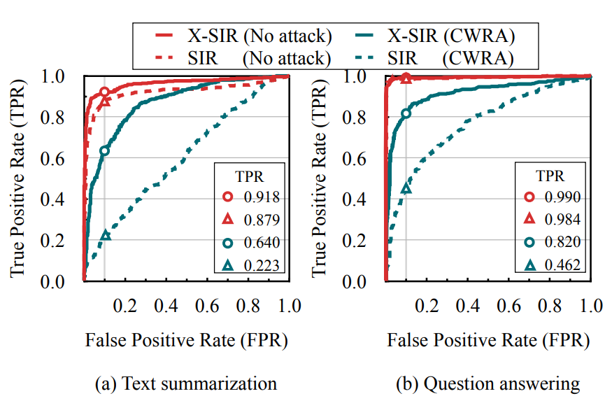
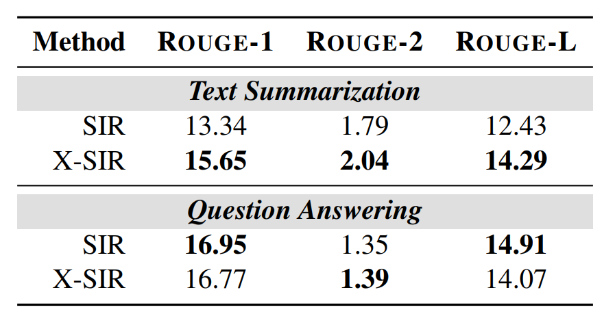

Evaluation:
Cross-lingual Consistency of Watermark
Attacking:
Cross-lingual Watermark Removal Attack (CWRA)
Method

Fig 3: The pipeline of CWRA. We select Chinese as the pivot language as an example.
An attacker that wants to remove the watermark from LLM-generated response typically do not want to change the language of the response. To bridge this gap, we introduce the Cross-lingual Watermark Removal Attack (CWRA), as shown in Fig 3. It wraps the query to the LLM in a pivot language, which is then translated back into the original language.
Experiment

Fig 4: ROC curves of the watermark detection under different attack methods.

Fig 5: Text quality under different attack methods.
Fig 4 and Fig 5 show the detection AUC curves and text quality under different attack methods, respectively. Among all the compared methods, CWRA stands out for its superior performance, as as it achieves the lowest AUC and the highest text quality.
Defending:
Improving Cross-lingual Consistency

Fig 7: ROC curves of X-SIR and SIR under CWRA and no attack. |

Fig 8: Text quality of X-SIR and SIR. |
We first analyze two key factors essential for achieving cross-lingual consistency (detailed in the paper). By reaching these two factors, our defense method, X-SIR, significantly improves the AUC and text quality under CWRA (Fig 7 and Fig 8). However, the defense method still has limitations, and we
BibTeX
@article{he2024can,
title={Can Watermarks Survive Translation? On the Cross-lingual Consistency of Text Watermark for Large Language Models},
author={He, Zhiwei and Zhou, Binglin and Hao, Hongkun and Liu, Aiwei and Wang, Xing and Tu, Zhaopeng and Zhang, Zhuosheng and Wang, Rui},
journal={arXiv preprint arXiv:2402.14007},
year={2024}
}